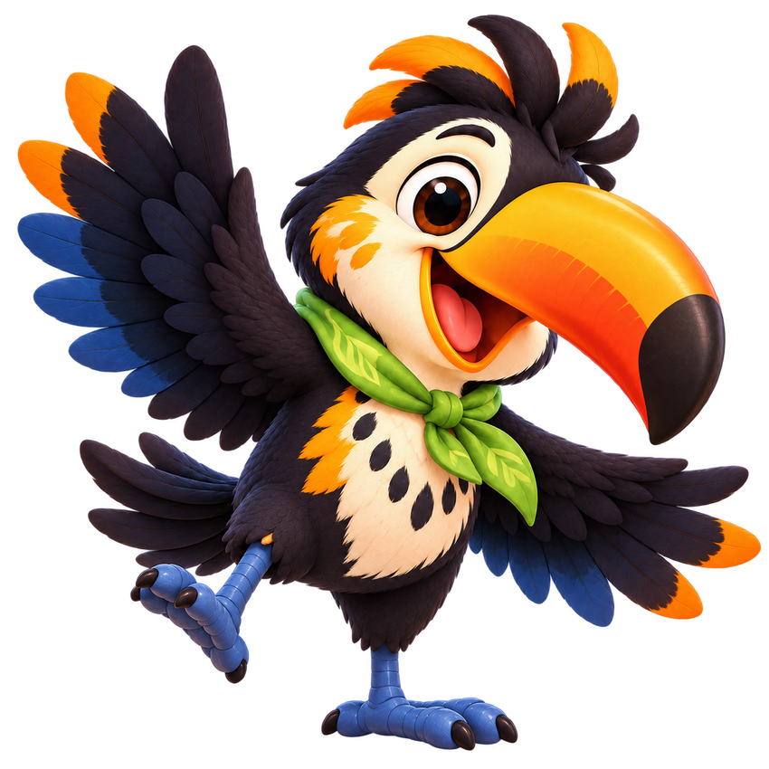
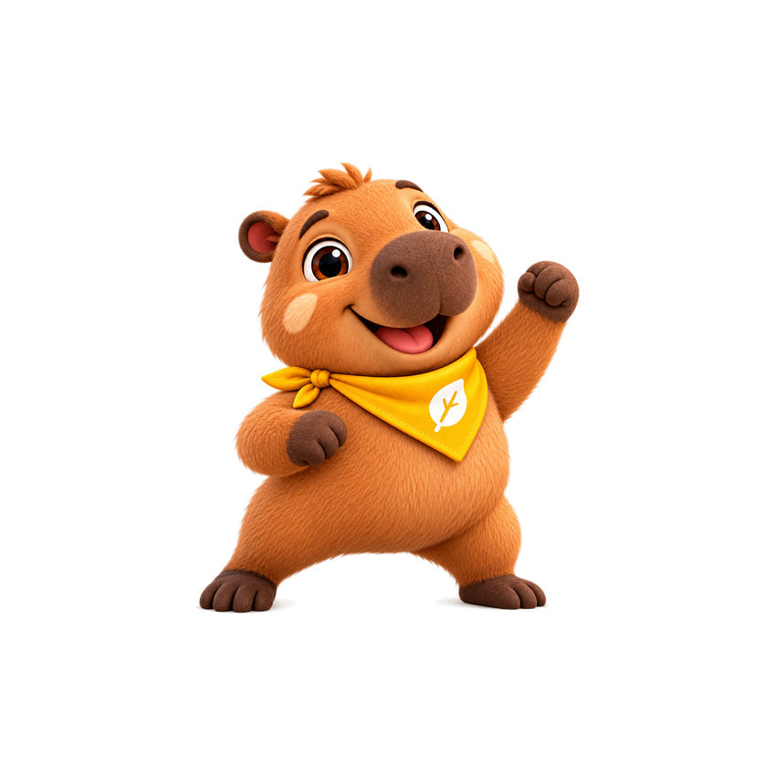
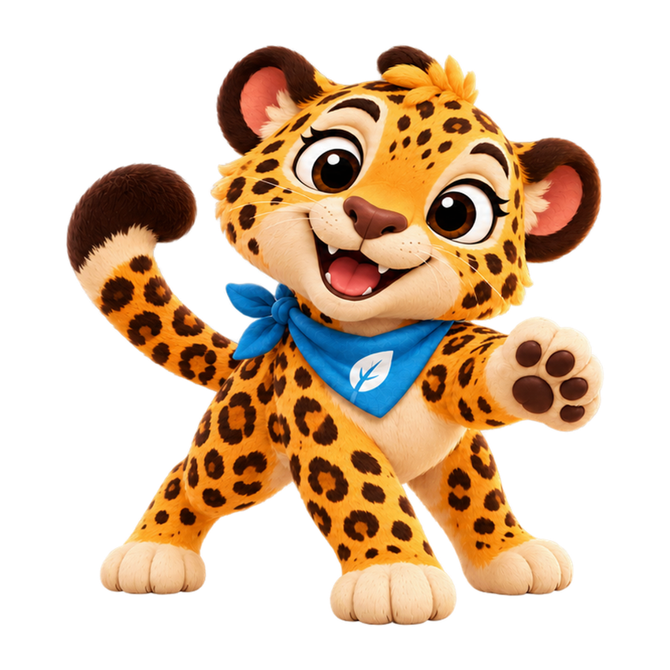
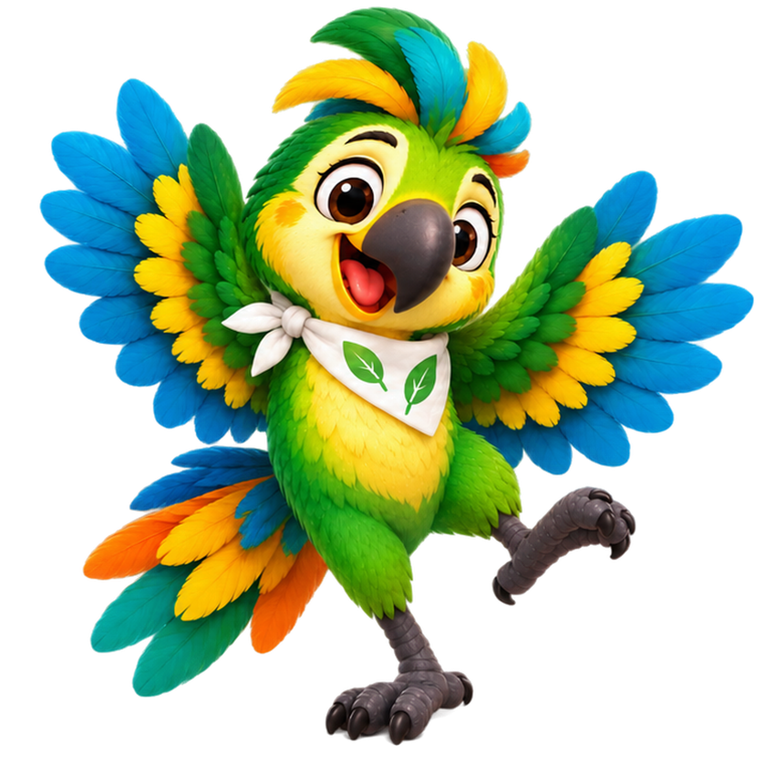
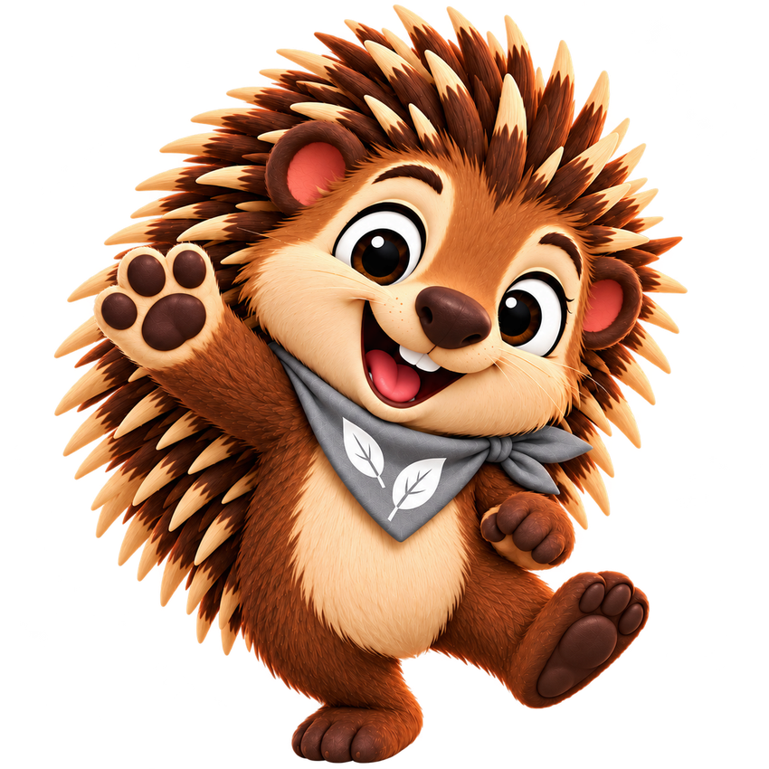

🌿 Meio ambiente
Fogo Não!
Uma pequena chama pode trazer um grande perigo. Aprenda a proteger nossa floresta.
Entre na floresta com Tuca, Pingo e seus amigos! Vídeos curtinhos para brincar, descobrir a natureza e aprender a cuidar do nosso mundo.
Um lugar especial para assistir, aprender e se divertir em família.
Uma pequena chama pode trazer um grande perigo. Aprenda a proteger nossa floresta.
Conheça Naná e descubra por que jogar lixo nos rios prejudica os animais.
Uma chuva forte, uma ponte encoberta e uma lição importante sobre segurança.
Bata palmas, pule, agache e dance com o Pingo! Um musical para mexer o corpinho.
Tente pesquisar outra palavra ou escolha uma categoria diferente.
Cada personagem tem um jeito especial de cuidar da natureza.

Curioso e corajoso, ensina a observar a floresta e reconhecer perigos.

Amigo carinhoso, adora dançar, perguntar e aprender novas lições.

Observadora e gentil, ajuda a turma a cuidar dos rios e dos animais.

Leva alegria às descobertas e lembra que a natureza merece carinho.

Calmo e atento, descobre que pedir ajuda também é um ato de coragem.
Cada episódio aborda situações que as crianças podem reconhecer: proteção da floresta, cuidado com os rios, prevenção de riscos e hábitos saudáveis. Assistir juntos é uma oportunidade para conversar, fazer perguntas e aprender.